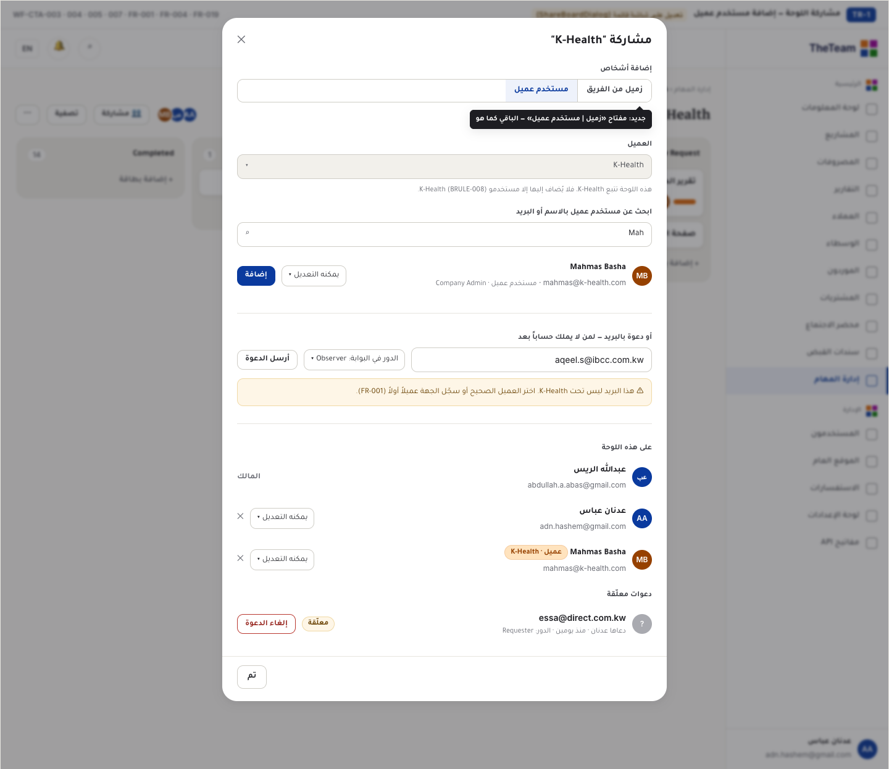
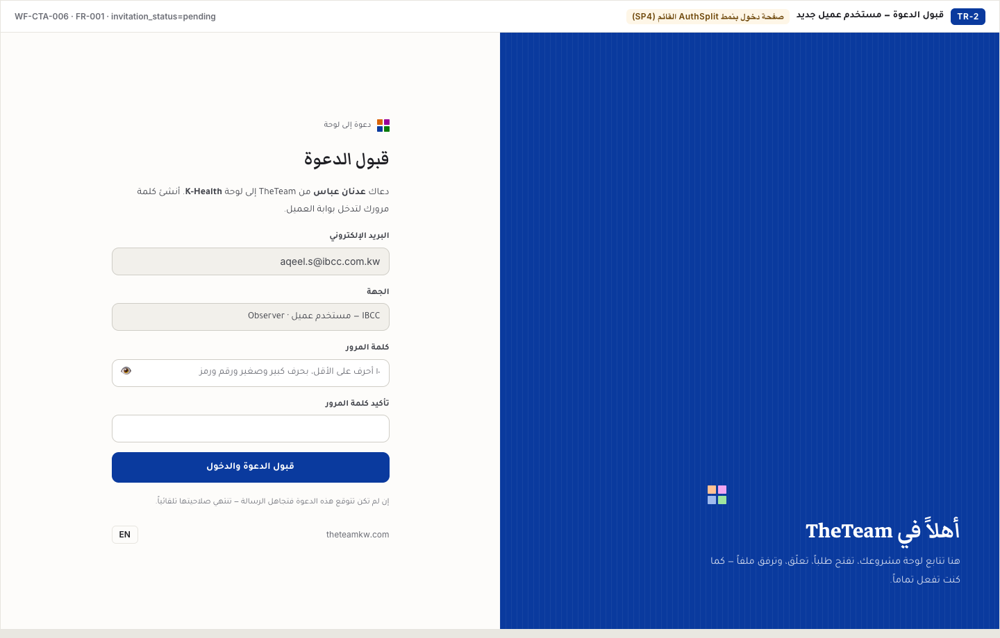
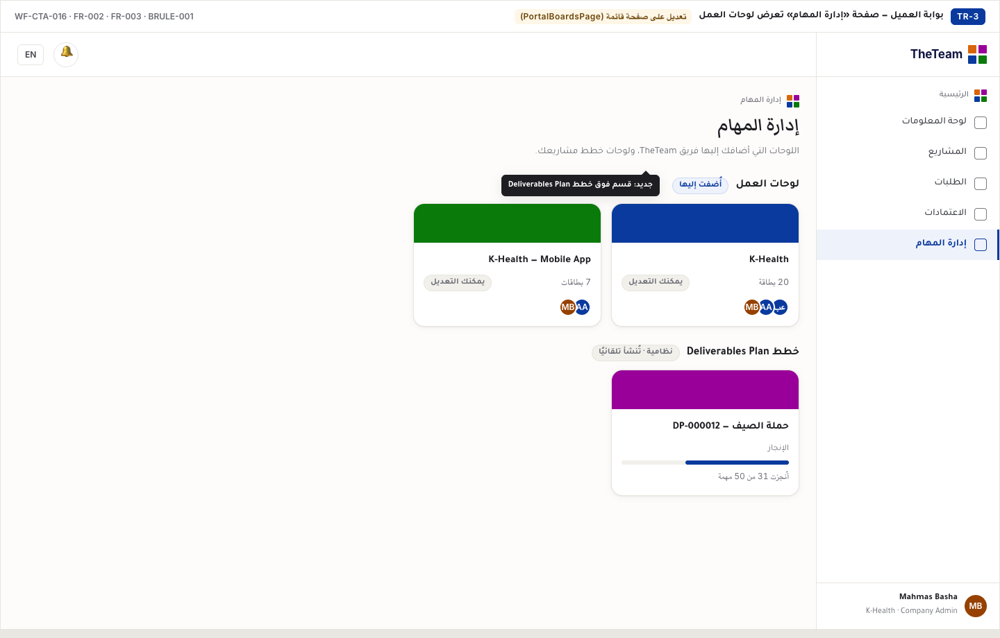
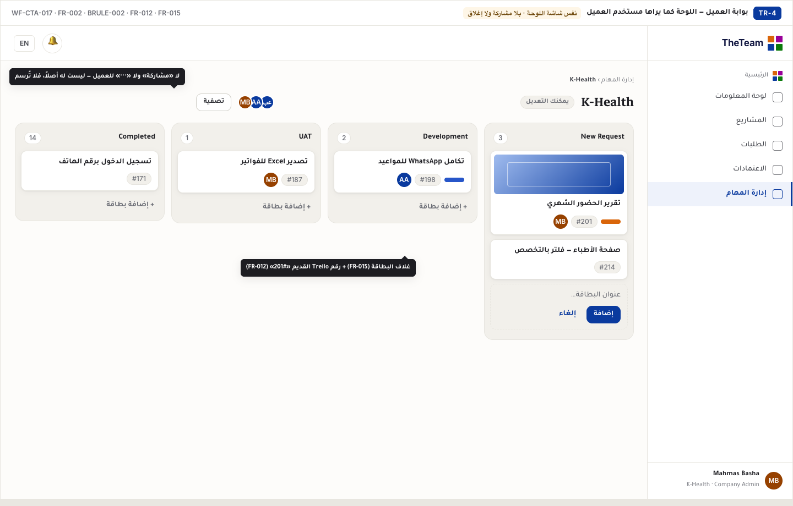
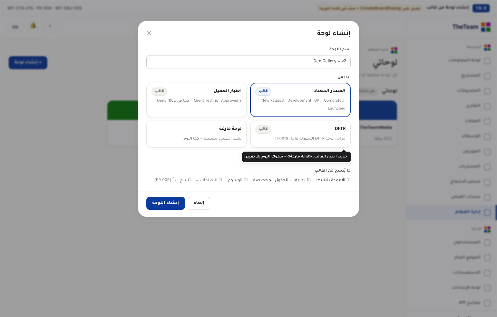
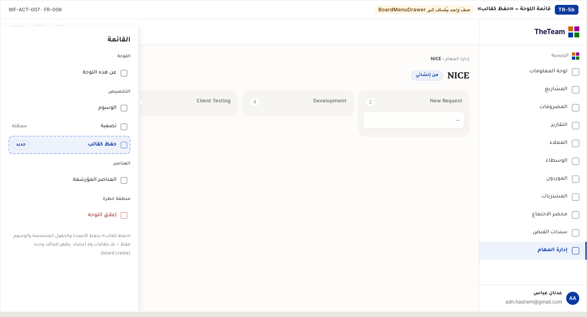
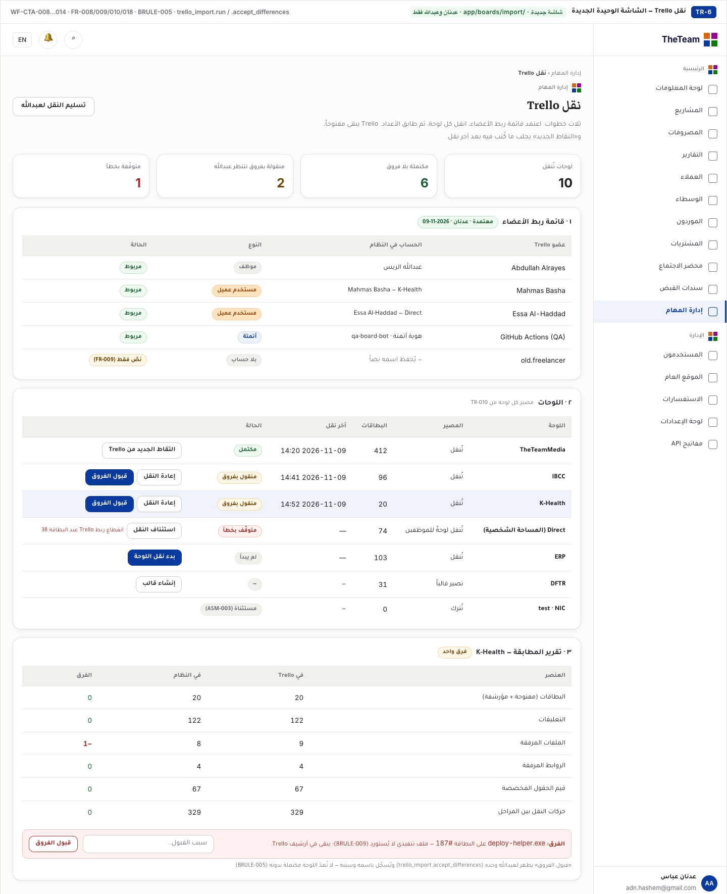
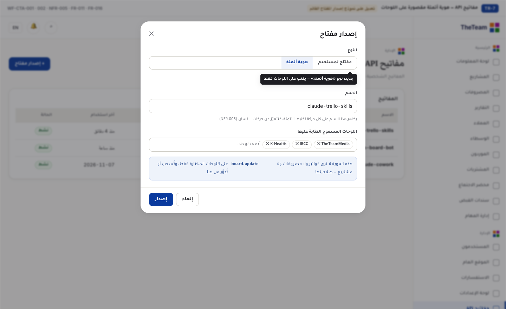
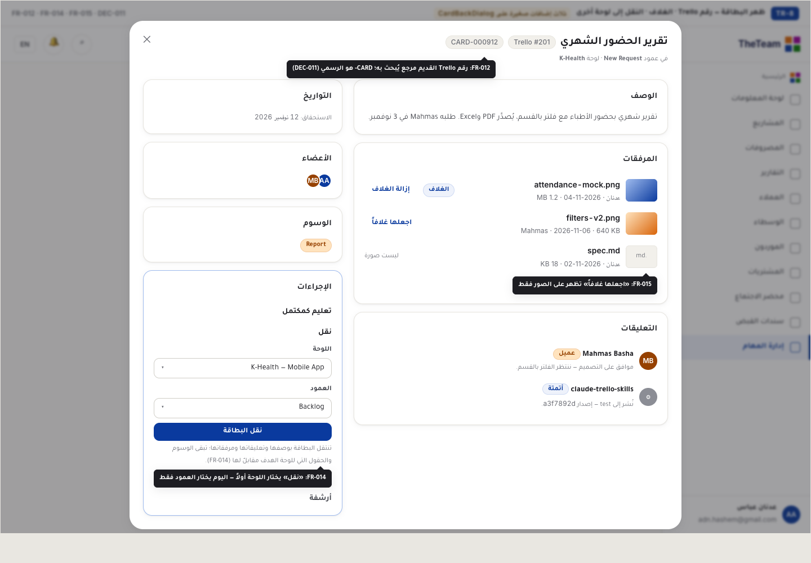

What we used in Trello and do not have yet — and how we add it without a big change
This proposal is for Abdullah. Nine gaps, measured from the real Trello inventory (13 boards, 867 cards, 17,047 actions). For each gap: why it is here, what changes on screen, what does not change, and a picture. Every picture is drawn in the system's current identity (TheTeam blue, the same sidebar, the same dialogs) — no screen is redesigned. The screen mock-ups are in Arabic, as the team uses the system; the English page describes the same screens.
1 · Requirements (BRD v1.2.0)
2 · Workflow (v1.0.0)
3 · Design — this page
4 · Permissions & connector
5 · Development
The rule everything below follows: no large changes to the existing system. We add only what was actually used in Trello and is missing. One new screen (Trello migration) and small changes to six existing screens. What was not used in Trello (Butler, Power-Ups, Timeline) is not built.
Change to an existing dialog + a section in the client portal
Why
Three people outside the company work on Trello today as normal members: Essa (Direct), aqeel (IBCC) and Mahmas (K-Health — 1,295 actions, mostly automation). In the system, work boards are staff-only and the client portal shows Deliverables Plan boards only. Your decision: there is no "guest" — an outsider is a client-portal user with their existing role, under a registered client (DEC-017).
What changes
The existing "Share board" dialog gets one toggle: Team colleague | Client user. Everything else stays.
With "Client user": the client is read from the board itself (every board belongs to one client), you search a user who already has an account, or invite a new email and choose their portal role.
Maximum access is "Can edit" — never owner, never invites, never closes (a normal Trello member).
A "Pending invitations" section with "Cancel invitation"; the user's row carries a "Client · K-Health" badge.
In the client portal: the existing "Task Management" page gains a "Work boards" section above the Deliverables Plans.
What does not change
The board screen itself — the client sees it exactly as staff do, without "Share" and "⋯" (not theirs, so not drawn).
The client does not create boards; they work on the ones we put them on and add a card when they have a request.
Cards stay hidden by default (DEC-013). Migrated cards open to whoever was on that board on migration day.

TR-1 · The current share dialog + "Client user" toggle + pending invitations

TR-2 · What a new invitee lands on: "Accept invitation", same look as the sign-in page

TR-3 · Client portal: "Work boards" section in the existing Task Management page

TR-4 · The board as a client user sees it: add a card, move it, comment — no share, no close
Gap 1 — client user☐ Approve☐ Change: ………………
2
Create a board from a template
Change to the "Create board" dialog + one row in the board menu
Why
Every project board in Trello was copied from another with the same stages (New Request → Development → UAT → Completed → Launched), some with a "Client Testing" stage as in NICE and Den, and the DFTR board becomes a template (TR-010). In the system you type the columns by hand every time.
What changes
The existing "Create board" dialog gets a "Start from" field: Standard flow · Client testing · DFTR · Blank board.
A template copies the columns in order, the custom-field definitions and the labels — never cards.
The board menu (⋯) gets one row: "Save as template" — owner only.
What does not change
"Blank board" is literally today's behaviour.
No separate template-management screen; a template is a board saved as one.

TR-5 · "Start from" inside the current create dialog

TR-5b · "Save as template" row in the board menu
Gap 2 — templates☐ Approve☐ Change: ………………
3
Email notifications
No new screen — settings only
Why
A client user does not open the system daily; Trello emails them when mentioned, assigned, or when someone comments on their card. You and Maytham lose Trello's emails after cancellation.
What changes
Three events join the system's existing notifications (mentioned in a comment · assigned to a card · new comment on a card you are a member of) — by email, for staff and client users, in each one's language.
Managed from the existing Notifications tab in Control Panel and each user's existing "Notification preferences" page.
What does not change
No new screen. A failed email never fails the comment (NFR-007).
Gap 3 — email☐ Approve☐ Change: ………………
4
Migrating the Trello boards into the system
The only new screen · seen by you and Adnan only
Why
10 boards with work in them and 867 cards with their comments, files and stage-move history. Your decision: migrate everything, lose nothing, and Trello stays open until you decide — so the migration re-runs to pick up whatever was written in Trello since the last run.
What changes
One page inside Task Management in three steps: member mapping (who in Trello = who in the system), boards (each board's fate, migration state and its button), reconciliation report (counts in Trello vs the system).
A difference is closed only by you: the "Accept differences" button is yours alone, with a reason recorded in your name (BRULE-005).
Seen by the holder of "run migration" (Adnan) and "accept differences" (you). Other staff do not see it.
What does not change
The screen never touches cancelling, freezing or closing Trello — all yours (DEC-018).
Migrated content keeps its original author and time; it is never attributed to whoever ran the migration.

TR-6 · Trello migration: member mapping · boards and their states · reconciliation report and accept differences
Gap 4 — migration☐ Approve☐ Change: ………………
5
Automation writes to the system under its own identity
Change to the existing "Issue key" form + connector tools
Why
86% of Trello actions (14,714 of 17,047) are written by Claude skills and GitHub automation — using your personal key. Moving that as-is would give the automation a token that can see invoices and expenses. Actions missing from the connector today: attach a file or link, add/remove a member, some label actions.
What changes
The existing issue-key form gets a kind "Automation identity": a name that appears on every action, specific boards only, revoked or rotated from the same page.
Listed with an "Automation" badge and its scope.
Automation actions carry an "Automation" badge in comments and history.
The missing connector actions are added (no screen).
What does not change
No Butler replacement (DEC-009): its effect is 65 actions out of 17,047.
Personal keys stay as they are.

TR-7 · "Automation identity" kind in the issue-key form, scoped to specific boards
Gap 5 — automation☐ Approve☐ Change: ………………
6
Attachment file types
No screen — the file acceptance rule only
Why
280 of 416 attachments in Trello are refused by the current extension allow-list by name (most have no extension in the name), among them 31 markdown files, 4 archives and one video.
What changes
The system infers the file type from its content when the name carries no extension.
Accepted on board cards: .md, .zip and video (proposed default — OQ-013).
What does not change
The 25 MB limit stays (the largest Trello file is 13.2).
The single executable is never imported; it stays in the Trello archive and is listed in the reconciliation report.
Gap 6 — files☐ Approve☐ Change: ………………
7
The old Trello card number
A badge on the card + searchable
Why
Release logs and GitHub comments refer to cards by numbers like #201. The system numbers cards CARD-NNNNNN continuously and never resets (the numbering rule) — so we do not break it, and keep the Trello number as a reference.
What changes
A migrated card carries a "Trello #201" badge beside its official number on the card back and the mini card.
Searching inside the board finds it by the old number.
What does not change
The official number stays CARD- (DEC-011). New cards have no Trello number.
Gap 7 — old number☐ Approve☐ Change: ………………
8
Card cover image
A button on the attachment + an image on top of the mini card
Why
Used on about 180 Trello cards. Cosmetic, but it was used — and you said: master everything that exists there and not here.
What changes
In the card back's "Attachments": images only get a "Make cover" button; the current cover carries a "Cover" badge and "Remove cover".
The mini card on the board shows the cover as a strip above the title (as in Trello).
What does not change
No colour covers and no image library — an attached image only.
Gap 8 — cover☐ Approve☐ Change: ………………
9
Move a card to another board
Board selector inside the existing "Move" action
Why
Used only 4 times in Trello, but it is on the list to master. In the system today "Move" picks a column within the same board only.
What changes
The "Move" panel on the card back gets a "Board" field before "Column".
The card moves with its description, comments and attachments; labels and custom fields are kept where the target board has a match.
What does not change
Moving within a board is as today. A client user moves only between boards they are a member of.

TR-8 · The current card back with the three additions: old number (7) · cover (8) · move to another board (9)
Gap 9 — move between boards☐ Approve☐ Change: ………………
Three things we need your word on before development
A client user's power on their board = a normal Trello member (creates, edits, moves, comments, attaches — never invites, never closes). Written in the requirements by Adnan's decision (DEC-002) and awaiting your explicit confirmation.
How long an invitation stays valid before it expires (WFOQ-001). No number is drawn so we do not assume one.
Who automatically sees a new card created by automation or opened by a client user (OQ-021). Proposed default: the board owner and every staff member of the board.
What we will deliberately not build — unused, or already cut by an earlier decision
Butler (automation replacement): 65 actions out of 17,047 — DEC-009.
Power-Ups · Trello Premium's Timeline and Calendar · copy board · background · the ★ star · copy/share a card (DEC-TM-8, which you approved on 2026-07-17).
Any change to the existing Deliverables Plan boards or the client portal (CON-001).
The size, in numbers
Kind
Count
Screens
New screen
1
Trello migration (TR-6)
New page on an existing pattern
1
Accept invitation (TR-2) — same look as the sign-in page
Change to an existing screen
6
Share board · client portal / Task Management · Create board · board menu · API keys · card back